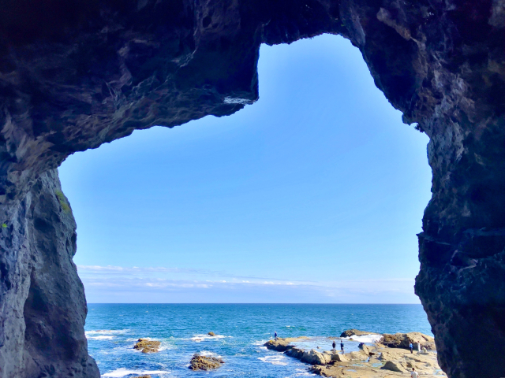

ー波が刻んだ神秘の洞窟ー
江ノ島参道から徒歩約15分
第一岩屋と第二岩屋は波の浸食によって作られた海食洞窟
ロウソクをもって洞窟を進んだ先に見える海は青空の日は格別

ー空と海の境界に灯る小さな奇跡ー
江ノ島シーキャンドルは相模湾を一望する海上60mの天望タワー
江ノ島全体を見渡すことが可能
晴れてる日には富士山を見ることもできる
夜にはライトアップ、敷地内にはカフェやお土産ショップも充実

ー潮風誘う、石段のグルメ散歩ー
しらす丼や両面焼きせんべいなどの名物グルメが並ぶ通り
神社や観光スポットにつながる江の島の入り口